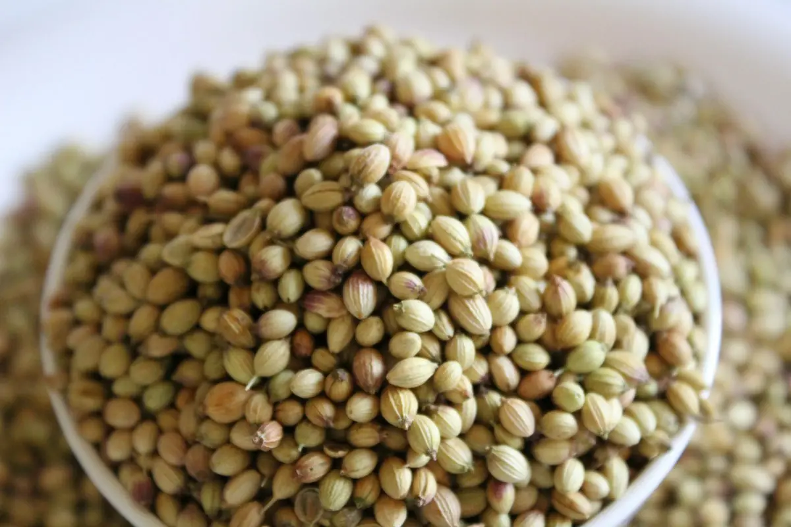

Dhaniya Aloo
धने आलू
- Time 25 min
- Serves 4
- Made with Satva Coriander Seeds
Coriander seeds roasted and crushed coarse by hand, not ground — the bits of husk are the point. Tossed with boiled potatoes until the edges catch.
Ingredients
- 4 mediumpotatoes (about 500 g), boiled and cubed
- 1½ tbspCoriander Seeds
- ½ tspCumin Seeds
- 2green chillies, slit
- 1 tspginger, grated
- 2 tbspoil
- ¼ tspTurmeric
- ½ tspChilli Powder
- ¾ tspsalt
- 1 tbsplemon juice
- 2 tbspcoriander leaves, chopped
Method
- Dry-roast the coriander seeds for 1-2 minutes until they smell warm and turn a shade darker. Cool, then crush coarse in a mortar - not to a powder.
- Heat the oil, add the cumin, then the crushed coriander, green chillies and ginger. Stir for 30 seconds.
- Add the turmeric and chilli powder, then straight away the potatoes and salt.
- Toss on medium-high for 6-8 minutes, leaving them alone long enough for the edges to catch and crisp.
- Finish with lemon juice and coriander leaves.